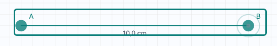
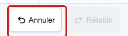
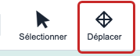
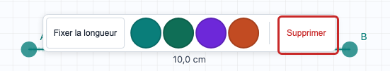

Géo
Molo
Aide-mémoire
1
Tracer
Clique sur la grille, puis clique une deuxième fois.

2
Oups!
Clique Annuler (en bas à gauche).

3
Déplacer
Clique sur Déplacer, clique sur un point, déplace-le, clique pour le poser.

4
Supprimer
Clique sur Sélectionner, clique sur un segment ou un point, puis clique Supprimer.

!
Au secours!
Appuie sur
Échap
(coin en haut à gauche du clavier). Sur tablette, clique le bouton
Terminer
dans la barre verte.